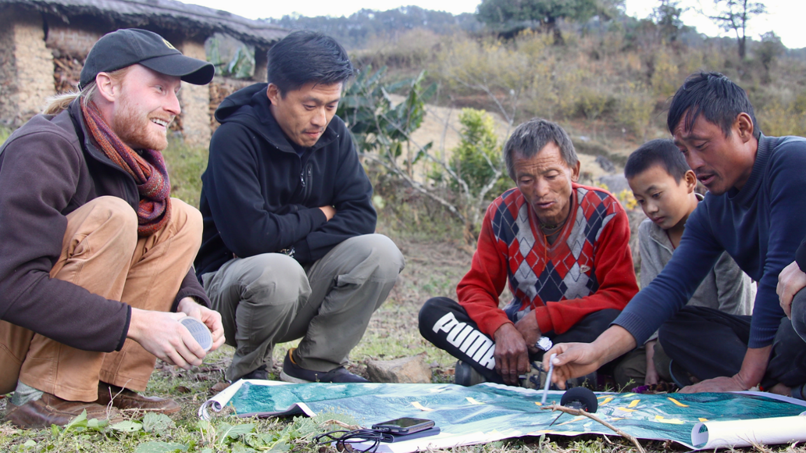
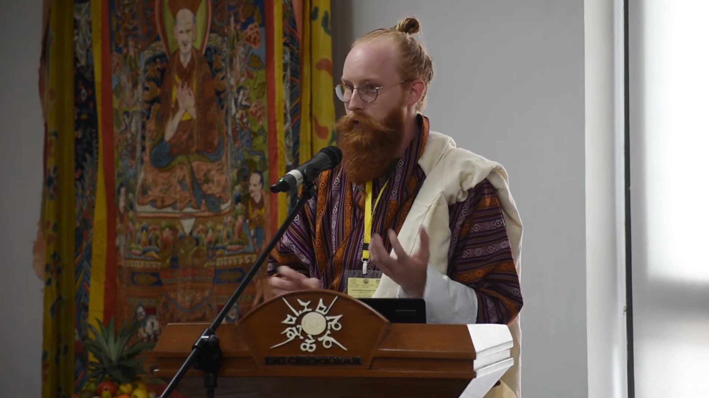

Integrative Conservation | Conservation Social Science | Collaborative & Participatory Approaches | Community Mapping & GIS
I design and lead applied social science research that integrates human dimensions (values, beliefs, knowledge systems) into protected area management and conservation decision-making.
For 12 years, I've worked at the intersection of anthropology, conservation science, and community engagement, forming lasting partnerships across Bhutan, South and Southeast Asia, and North America. My research demonstrates that spiritual practices, cultural knowledge, and place-based ontologies are not obstacles to conservation. Rather, they are operative forces that shape successful outcomes.
Expertise: Conservation social science | Community-based conservation | Participatory mapping | Ethnography | Applied anthropology | Protected area management | Stakeholder engagement | Socioeconomic monitoring


Natural Resource Stewardship and Science Directorate, Fort Collins, CO | 2025
As Socioeconomic Monitoring Program Meta-analyst, I supported rigorous socio-ecological data analysis across parks, supported development of protocols for analyzing socioeconomic monitoring data, and provided technical assistance to recreation, leisure, and visitor use programs. Supported creation of tools and reference materials for stakeholders to understand complex social science data and results.
Accomplishments: Supported successful rounds of social surveys at parks; supported filling maximum opt-in slots for high-interest parks; supported publishing communications, data dashboards, and GIS maps through the Social Science Program.
Royal Society for Protection of Nature (RSPN), 2015–2023
Led a long-term, applied social science research project measuring the human dimensions of community-based bird conservation. Engaged 375+ participants through surveys, interviews, focus groups, and participatory mapping exercises. Produced implementable results to inform adaptive management in protected areas.
Outcomes: Co-authored national conservation strategies; managed $54,500+ in grants; published technical reports and peer-reviewed articles; developed interactive GIS maps as decision support tools.
Firebird Foundation Fellowship, 2020
Integrative cultural mapping project documenting local knowledge of Bhutanese landscapes and foregrounding ontological relationships between protective territorial deities and human communities. Collaborated with contemporary artist Gyempo Wangchuk to center lived religion in conservation planning.
2024: Featured article, Current Conservation; Langscape Magazine cover article (Terralingua)
2022: Featured ICON student at UGA's Center for Integrative Conservation Research; Video interview, Drukyul's Digital Salon (Bhutan Echoes)
2020: Featured in UGA Office of Research article "Pivoting During a Pandemic: Fieldwork in the time of COVID"
2016: National Geographic Explorers Directory (grantee 2016 & 2019)
I'm interested in collaborative research, funding opportunities, and partnerships in conservation social science. Reach out with inquiries about project collaboration, speaking engagements, consulting on integrative conservation approaches, or research partnerships.
Phone: 608-780-8402 (EST) | Based in: Athens, Georgia
Conservation social scientist | Environmental anthropologist | Community-based conservation practitioner